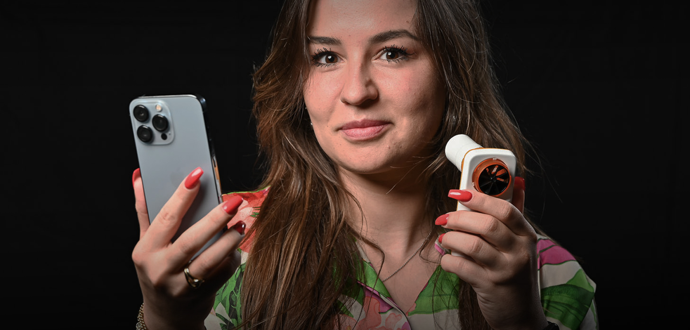
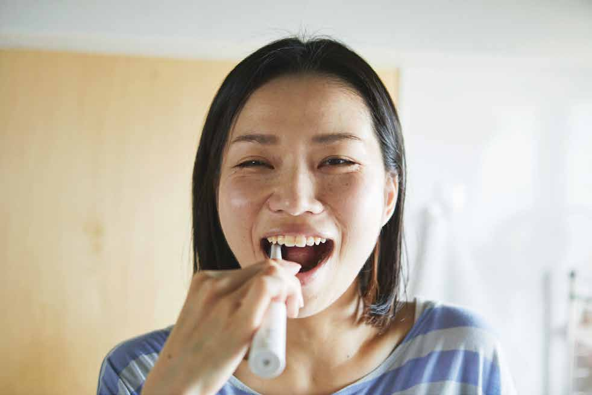
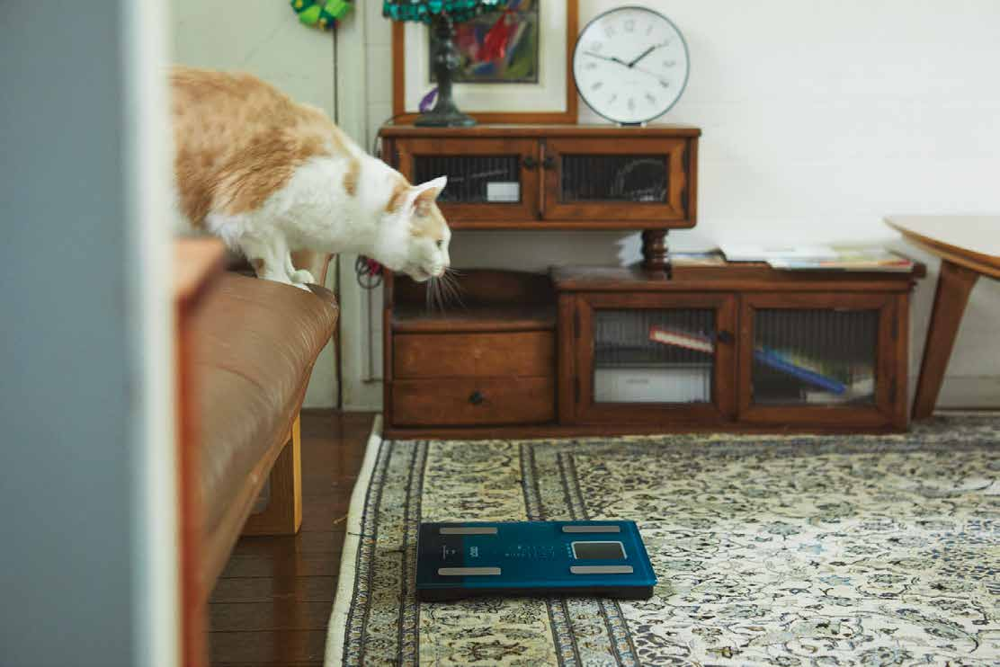

We believe in a strong, inclusive culture that keeps us together and on the right track. You are our culture — so live by these values and help shape what comes next.
This handbook gives you the freedom to act in a way that aligns with our values, our rules (we try to keep them simple), and a collaborative, respectful spirit. It's a living document — a balance between the needs of the people and the needs of the company, refined and improved over time.

Our culture is designed to help you prosper as a human being and experience exceptional personal growth — with work as the vehicle — while generating great business outcomes and, above all, having real impact on our purpose. We believe both are inextricably linked.
Our culture has one requirement: a growth mindset. A willingness to learn, try new things, fail, and push yourself to grow. People who have that will thrive. Those who don't, won't.
You don't work endless hours for the sake of working. You make every hour at work count, so you can make every hour count when you're not working.
We don't believe in conventional hierarchy. We find the best people and trust them with the freedom to make decisions within their expertise. Clear accountabilities with the authority and responsibility to act. Fast decision-making by the people who know best.
That's why we practice Holacracy — a way of working where everyone has real freedom and real responsibility. It can feel scary, adventurous, and energising. But we help each other grow and succeed together.
Luscii is a fully remote company. Your time is probably split between a shared office, home, the train, a partner's office, or even a patient's home. You know best what's needed to fill your roles — so you decide where and when you work.
Night owl who works 10:30 to 20:00? Early bird starting at 7:00 and out by 15:00? That's fine, as long as it works for the people you collaborate with.
We give you flexibility — and expect flexibility in return. Urgent fires to fight? We expect you to step up. But overtime should never become the norm. When you see crunch mode becoming chronic, raise it so we can solve it together.
Holacracy prioritises roles and accountabilities over individuals. That approach keeps us focused — but we're not robots. We're people with emotions, needs, and expectations.
That's why we distinguish two contexts. The Organisation Context is where the work happens — roles, responsibilities, tactical and governance meetings in service of purpose. The People Context is where our culture lives — social dynamics, relationships, values, assemblies, and everything that makes us human at work.
The People Context focuses on how we relate to each other and create an environment where everyone can thrive. It's our space to be authentic, connect with others, and shape our own culture.
Freedom and responsibility go hand in hand. If you misuse the trust and freedom you get, the natural response will be to make more rules. Don't blow it for the others.
Everyone has the freedom to make mistakes — but you should own them, and take responsibility to fix them.
The freedom of knowing what to do, when no one is telling you what to do.

New Year Resolution #1: Be more awesome than last year.
What personal growth means is different for everyone at every stage of life. We encourage you to cultivate a growth mindset — a willingness to learn, try new things, fail, and push yourself forward.
You can spend up to 4% of your annual salary on training, conferences, books, external coaching, or however you choose. No approvals needed. You know best what you need to grow.
As a guideline, ask yourself: "Will this investment benefit both me and Luscii?"
We can't all become the same kind of expert. We need people with different skills, attitudes, and strengths. Think carefully about the right path for you — and know that we have dedicated coaches to help when you need direction.

As a remote-first, paperless company, we already reduce our environmental footprint by design. But we want to go further.
Next up: carbon footprinting and a plan to reach net zero as quickly as possible.
Our culture is not all sunshine and rainbows. Operating consciously takes real effort — and it's not for everyone. That's okay.
When you're lost and don't know what to do, sit down, take a coffee, and read these values again. Hopefully you'll find inspiration and get back on the right path.
You can always reach out to the handbook author for more information, a clarifying question, or just a good conversation. And don't forget — we have growth counsellors who can help you on your journey at Luscii.
If you see something that isn't right — have the courage to speak up.